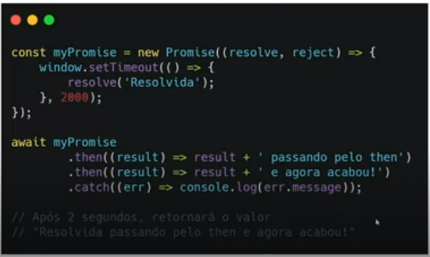
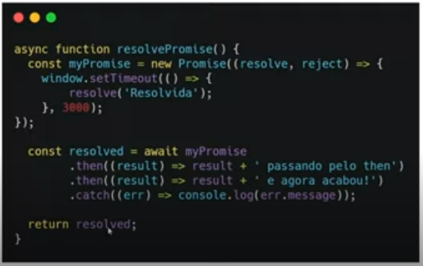
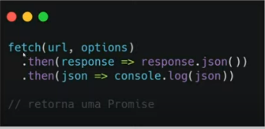
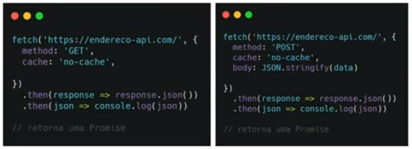

Assíncrono é algo que não ocorre ou não se efetiva ao mesmo tempo. Ou seja, um processo pode começar enquanto outro ainda não terminou.
É um objeto de processamento assíncrono. Inicialmente de valor desconhecido e depois ela será resolvida (then()) ou rejeitada (catch()).
Tem 3 estados, pending, fulfilled ou rejected.
Abaixo segue um exemplo de uma promise completa
No exemplo acima, a palavra await é usada para se referir à promise já resolvida ou rejeitada e conseguirmos manipular seu retorno.
async serve para mostrar que a função é assíncrona, ou seja, tem elementos assíncronos nela. O await serve para lidar com funções assíncronas; ele pára o código, espera a promise ser resolvida e depois libera novamente para que o código siga.
É uma forma de intermediar o back e o front. Conseguimos acessar por url's. É muito comum o formato json para trânsito de dados de api's.
O método fetch tem a seguinte sintaxe.
O fetch retorna uma promise, portanto preciamos usar o await.
